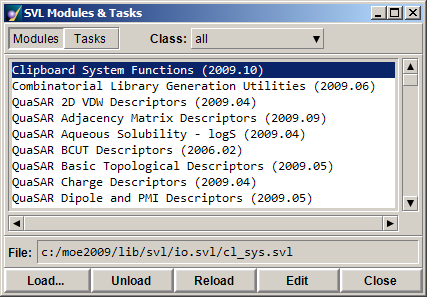
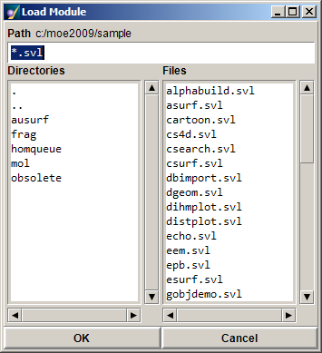
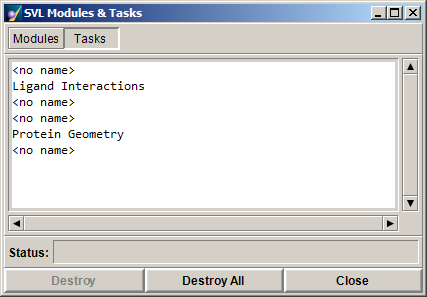
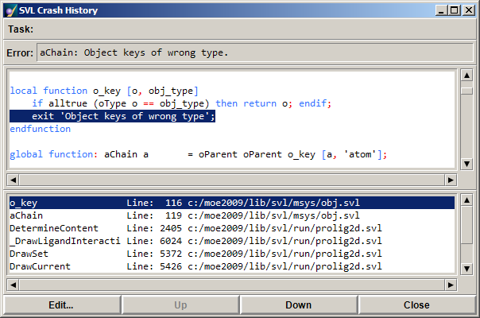

The SVL Modules & Tasks panel helps you keep track of which modules are loaded and which tasks are running at any given time in MOE. To open this panel, choose .
Tip! Alternatively, position the cursor over the SVL button in the upper right corner of the MOE Window and press <Ctrl>-click. This alternate invocation can be done at any time, even when the system is suspended by an SVL task, making it possible to cancel, for instance, a task whose resource needs are slowing down the graphical user interface.
The module and task managers are different pages that share the Modules & Tasks panel. Buttons at the top of the panel toggle between the two. The Modules page lists loaded modules; the Tasks page lists tasks that are currently in progress.
Modules are SVL functions that are grouped in files and loaded into SVL as units. Loaded SVL modules appear in the Modules page of the SVL Modules & Tasks panel, where they can be unloaded, reloaded, and edited.

Modules are listed according to class. Select a class in the Class option menu. When All is selected, all modules in the system are listed. A module can be put into a class by using the #set class directive. For information on how to include these in an SVL program please see Modules.
Modules are selected by clicking on them with the mouse. When a module is selected, its path and filename appear in the File field, below the list area.
| Load |
Opens the Load Module panel. This file selection box allows you to specify
the SVL file to load in the system.
If the module is already loaded, MOE will replace it.
 The executable code of a loaded file is kept in memory until the file is unloaded. Note: SVL modules may also be loaded or run from the MOE Open system. To do this choose MOE | File | Open, select the SVL file you wish to load and select the desired operation button. |
| Unload | Unloads the selected module. If you mistakenly unload a MOE core module such as Sequence Editor Support, restart MOE. All modules are automatically loaded into the system at startup. |
| Reload | Reloads the selected module. |
| Edit | Displays the contents of the selected module in a Text Editor. This allows you to edit the SVL contents of the file, save the modifications, and reload the module. |
Running a function or issuing a command at the CLI initiates an SVL task. MOE is a multi-tasking application, and many tasks can be underway concurrently. The Tasks page of the SVL Modules & Tasks panel shows the currently active tasks. Tasks are selected by clicking on them with the mouse. Tasks can be canceled from within this panel.

The status of the selected task is shown in the Status field below the list area.
| Destroy | Destroys the selected task. Deleting no name tasks should be avoided as these untitled tasks are "owned" by named tasks. |
| Destroy All | Destroys all tasks. This option should be used with care. |
Tasks can be also terminated using the Cancel menu or by pressing Esc if the task is a prompter.
When a task terminates with an error, you can use the SVL Crash History panel to pinpoint where and in which function it failed. The Crash History displays the line at which execution stopped as well as the function calling sequence (function stack trace).
Choose to open the SVL Crash History panel.

The Task line at the top of the panel displays the name of the task that caused the error. Beneath it, the Error line shows the error message.
The bottom list displays the function calling sequence that produced the error. Each line displays the function name, the line at which execution stopped, and the name of the file in which the function is defined. When selected, the corresponding file is displayed in the area above, with the appropriate line highlighted. If a line belongs to a recursively invoked function, its recursion level is also given.
| Edit | Loads the contents of the selected file in an SVL Text Editor window. |
| Up | Moves selection up the calling sequence of the files listed in the bottom list. |
| Down | Moves selection down the calling sequence of the files listed in the bottom list. |